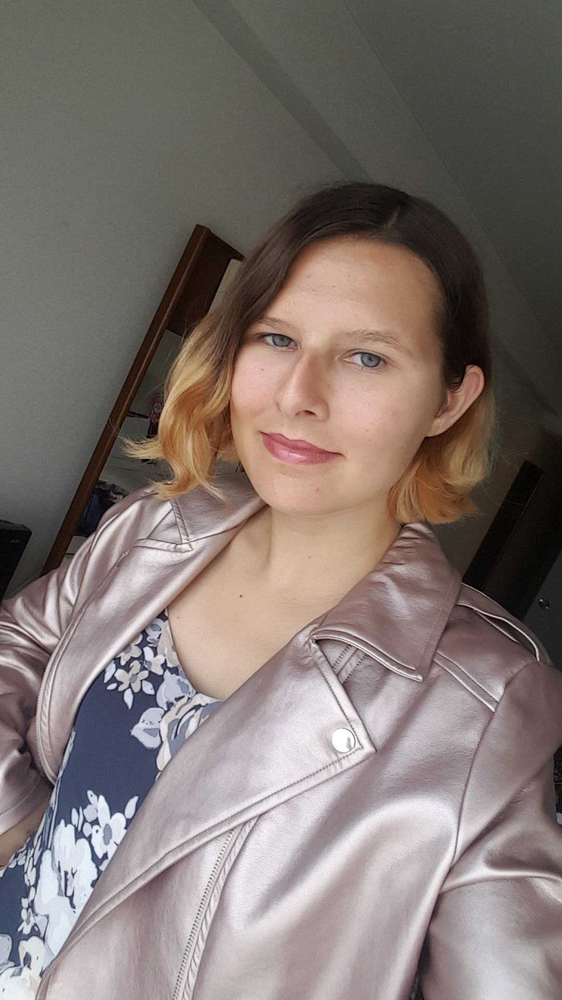

Hi, I'm Becca!

Game. Design. Development.
Ask me about my projects! My weekends are kept pretty busy with game jams, hackathons, and independent side quests. My favorite project so far has to be Sleepy Jeoff from Global Game Jam 2019! Our artist team was amazing and having only two programmers meant I learned a lot about a variety of features in Unity.
For some background: I grew up in Holliston, MA with family across New England and some down in Fort Myers. I was co-president of my high school's NERD club and grew up playing XBox with my dad. Now, I'm a CS student at Northeastern, minoring in Japanese and Game Design. You can find me at NU Game Dev Club and NU Women in Tech!